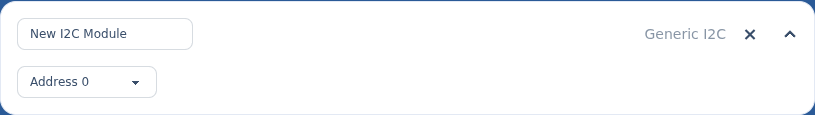

I²C modules.
I²C modules are peripherals on the node's STEMMA QT / I²C bus that you address from your scripts. The status OLED is detected automatically and doesn't appear here — this is for other I²C devices.
§Add one
On the Modules screen, expand the location whose node the device is wired to, select + on I2C Modules, choose Generic, then Add Module. Expand the new row to configure it.
§Settings

- Name — a label for the device, so you can tell it apart in scripts.
- I²C address — the device's address on the bus (
0–127). Match it to the address the device is set to.
i
Only Generic is available today
The Human Cyborg Relations and PWM Board I²C types appear in the list but aren't implemented yet — selecting them just shows a "not implemented" notice. Use Generic for now.
Back to Modules & hardware to finish this node, then Save and Sync.